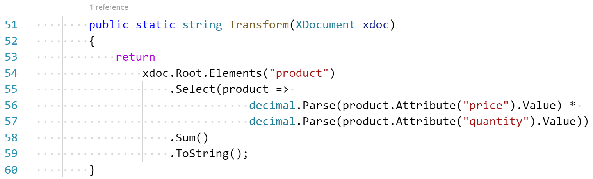

XSLT
Use the Right Tool for the Job

Tomasz Heimowski
@theimowski

Intent
Context
XSLT Quickly

based on xslt 1.0 !
PDF Diff DEmo
Profit
Template: Full Cover

Template: Masthead with Right pane
Template: Masthead with few contacts

Template: Masthead with more contacts
Template: Masthead with 2 columns

Template: Masthead for specific brand

Columns: 1 column text flow
Columns: 2 columns text flow
Charts & tables layout: Centered

Charts & tables layout: aligned Left


Charts & tables layout: aligned Right


Charts & tables layout: Grouped

Charts & tables layout: Full width
Charts & tables layout: Landscape

Running heads: facing pages

and many more features...

numbers
- ~2.000 XSLT LOC
-
3 IHS Markit Domains
- Chemical
- Economics
- Energy
-
~2.000 PDF Reports Generated
- 1 page long (smallest report)
- 300 pages long (largest report)
- ~20.000 Pages of content
- Much more yet to come
Practice
Implicit

Explicit

XPath
Inovice sum
Expected sum: 150
Inovice sum - XSLT 1.0 with recursion
Inovice sum - C# with recursion

Invoice sum - C# LINQ expression

Inovice sum - XSLT 3.0 with XPath 3.1

XPath features
- expressions: conditional, quantified, logic, etc...
- concise syntax
- list collect
- list map
- list filter
- functions
- arrow operator
- let bindings
http://www.saxonica.com/documentation/index.html#!expressions
Formatting richtext - named templates
Formatting richtext - functions

XSLT Functions
- More concise syntax
- Can be used in XPath expressions
- Isolated - no implicit context nodes
Static Typing


XML syntax
Applying discounts
- Get 30% discount for product with "002" sku
- Buy 3 for 2 products with "003" sku
- Expected sum after discounts: 109
Applying discounts
Applying discounts

Debugging


Profiling


Only in commercial Saxon Editions
- higher-order functions
- schema-awareness
- streaming
- various performance optimizations
- more extension points